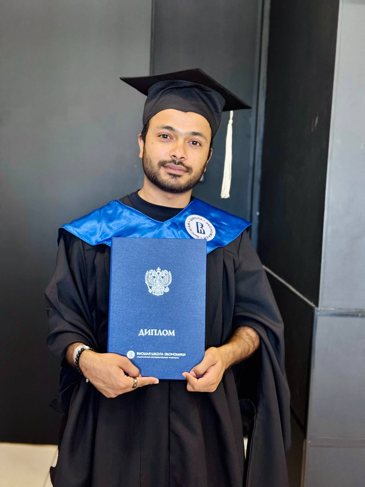

👋 Hello, I'm
Applied Linguistics & Text Analytics Researcher
MA Graduate, Higher School of Economics, Moscow
Exploring the intersection of language, cognition, and computation. My research investigates syntactic complexity in dementia speech using corpus linguistics and NLP methods to understand cognitive decline through linguistic markers.
A proud moment in my academic journey

Successfully defended my thesis and completed my Master's degree at the Higher School of Economics, Moscow. This milestone marks the culmination of rigorous research in corpus-based analysis of syntactic complexity in dementia speech, contributing to the growing field of computational linguistics and cognitive health diagnostics.
I am an Applied Linguistics and Text Analytics researcher and recent MA graduate from Higher School of Economics (HSE), Moscow, specializing at the intersection of language, cognition, and computation.
My research investigates how cognitive decline manifests in syntactic structures, using corpus-based methods to analyze spontaneous speech from the DementiaBank corpus. I develop Python pipelines for T-unit segmentation and apply morphosyntactic error tagging to track linguistic markers of dementia and MCI.
With a background in English Literature and Linguistics from GC University Faisalabad, I bring a unique interdisciplinary perspective to computational linguistics research, combining traditional linguistic analysis with modern NLP techniques.
Higher School of Economics, Moscow
2024 – 2026
Thesis: "Grammatical Structure under Cognitive Strain: A Corpus-Based Analysis of T-Syntax in Dementia and MCI"
Government College University Faisalabad
2018 – 2022
CGPA: 3.54/4.0
Ministry of Science and Higher Education of the Russian Federation (2024)
Higher Education Commission, Pakistan (2018)
Exploring language through computation
Corpus-based analysis of T-Syntax in Dementia and MCI using DementiaBank Cookie Theft corpus. Testing the Adaptive Strategy Hypothesis that speakers reduce subordination and dependency distances to preserve semantic content.
Computational corpus analysis of Dawn and Express Tribune examining climate framing, responsibility attribution, and media discourse in Pakistani English newspapers.
Meta-analysis focusing on lexical retrieval mechanisms and semantic category clustering in verbal fluency studies across different language cohorts.
Assessing multilingual corpus extraction methods for Urdu environmental texts, addressing data scarcity challenges in low-resource language corpus development.
Research contributions to the field
Sharing research with the academic community
IV Conference of Students, Postgraduates, and Young Researchers TERRA HOMINIS
HSE University, Moscow | April 8-9, 2026
International Scientific-Practical Conference on NLP for Linguistics
Tomsk State University, Tomsk, Russia | February 28 - March 1, 2025
Building expertise through collaboration
Minhaj University Lahore, Pakistan
Working on "The Framing of Climate Inequality in Pakistani English News: A Computational Corpus Analysis of Dawn and Express Tribune." Conducting computational corpus analysis using AntConc and Python-based NLP tools.
Higher School of Economics, Nizhny Novgorod
Collaborated on meta-analysis "Corpus-Based Analysis of Verbal Fluency Studies." Utilized Python (pandas, matplotlib) for dataset standardization and developed reproducible code for methodological variance analysis.
Volunteer Position
Provided English language instruction to secondary students in underserved communities, resulting in top national exam scores.
Technical and methodological competencies
I'm always open to research collaborations and academic discussions
Moscow, Russia
Higher School of Economics (HSE)
Moscow, Russia
dogarahmad508@gmail.com